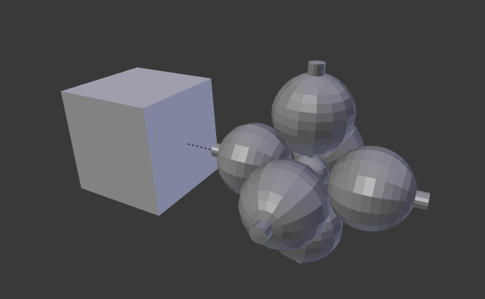

Faces¶
Reference
| Mode: | Object Mode |
|---|---|
| Panel: |
Instancing Faces is the capability to replicate an object on each face of a parent object. One of the best ways to explain this is through an example illustration.
- Scale
Scales each instances according to the size of its corresponding face.
- Inherit Scale
- Scale the instance faces objects.
Make Instance Face tool converts linked objects (that share mesh data) into instanced faces. This tool creates the parent object (instancer) with faces where the objects were, then it uses Instancing Faces to put instances at the location of every created face.
You can to go back from Instancing Faces to multiple linked objects using , Shift-Ctrl-A.
Basic Usage¶
In this example we will use a UV sphere with an extruded “north pole” as our base object and cube as our parent mesh. To parent the sphere to the cube, in Object Mode, first RMB select the sphere, then Shift-RMB select the cube (order is very important here), and finally Ctrl-P to parent.

A cube and a sphere. |

Instancing Faces applied to the cube. |
Next, in the , select Faces. The sphere is instanced one for each face of the cube.
Note
Inherited properties
The location, orientation, and scale of the instanced child(ren) matches that of the faces of the parent. So, if several objects are parented to the cube, they will all be instanced once for each face on the cube. If the cube is subdivided, every child will be instanced for each face on the cube.
Both the parent object and original are displayed as editable “templates” in 3D View, but neither is rendered.
Scale¶

Scale enabled. |

Top face of cube scaled down. |
{kind=link}
By enabling Scale for the parent object, the scale of the child objects will be adapted to the size of each face in the parent object.
Thus, by rescaling the face of the parent object, the size of the instanced object will change accordingly.
Limitations/Considerations¶
The positioning of the instanced geometry relative to the face is dependent upon the position of the child objects relative to the instancer’s origin. This can lead to some visual artifacts in the 3D Viewport as the geometry of the original objects overlaps or intersects with the instanced geometry. One workaround is to move the origin of the instancer mesh off of the plane of the faces.
If the geometry of the children is not symmetrical then the orientation of the face (as determined by the order of its vertices) could matter. As of 2.70 Blender does not have tools which allow you to adjust the ordering of the vertices on a face.
However, there is a workflow that lets you control for this. Make a single square and enable the Instancing Faces so you can see the instanced geometry in the 3D Viewport. If the orientation is not what you want, rotate the face until it is how you want. Typically you want to do the rotation in Edit Mode, not Object Mode, but this is not a hard rule.
Once you have the orientation correct, Duplicate the face and move the duplicate where you want it. Repeat this process until you have enough faces. Since it is common for these faces to butt up against one another, your geometry will have lots of duplicate vertices. Use the Merge by Distance button in the Tools panel.
Demo Video
A short video illustrating this workflow: